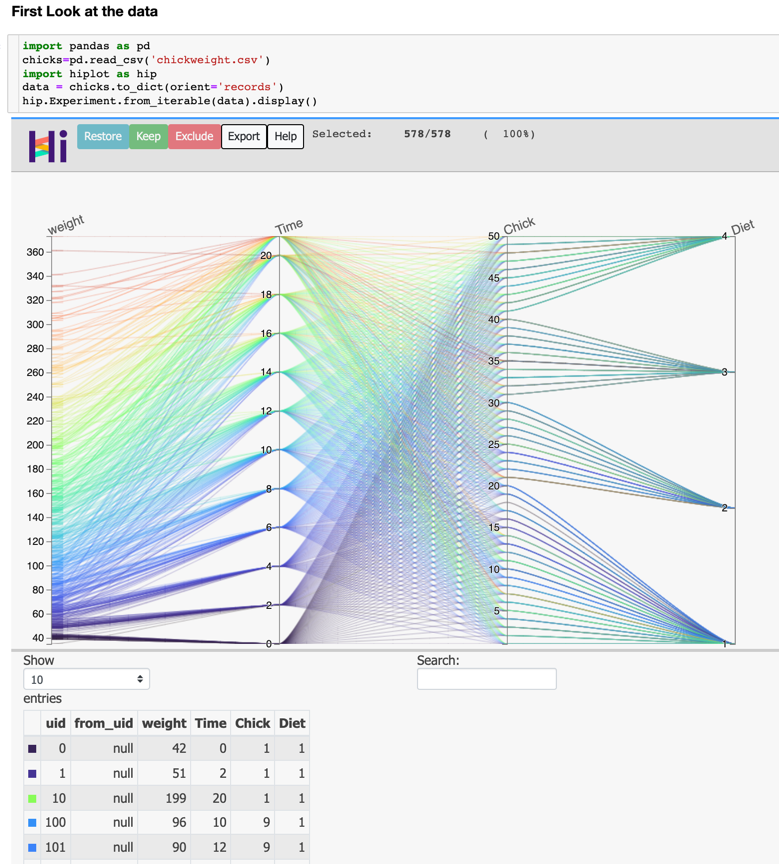
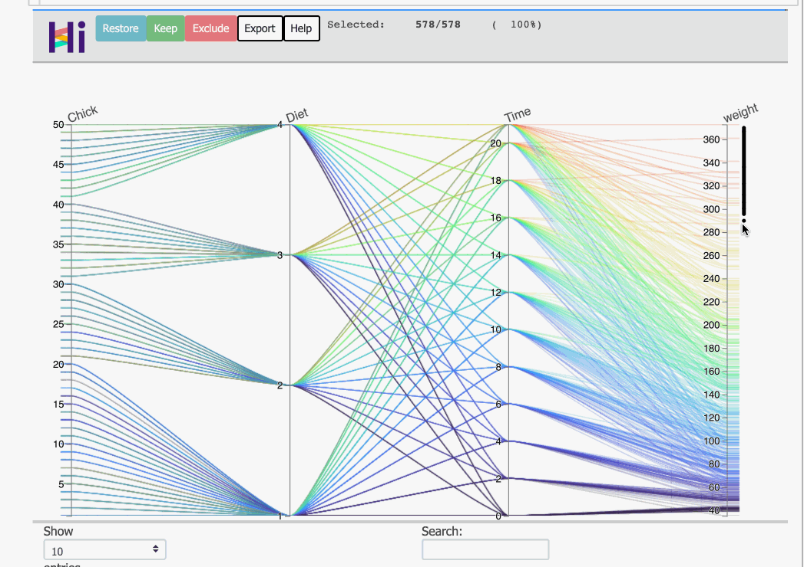
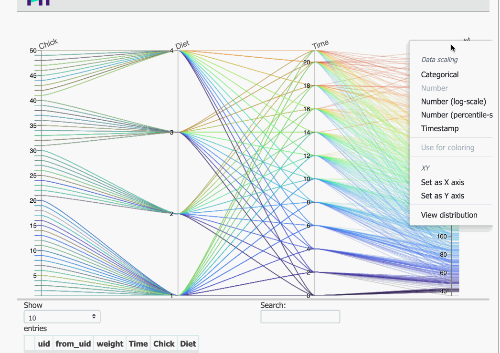
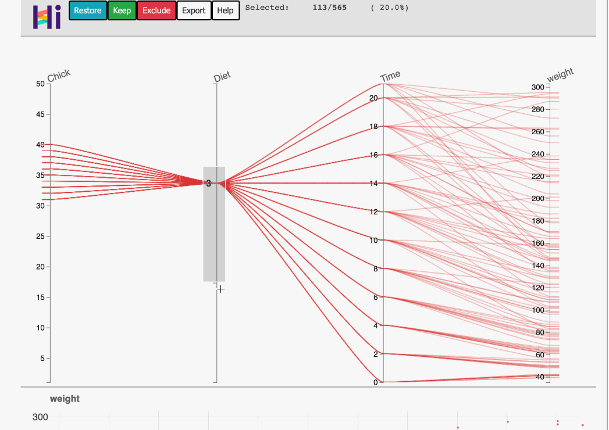

HiPlot - Better Parallel Co-ordinates
HiPlot is a very-light interactive visualisation tool by Facebook AI Research that allows you to view n-dimensional relationships in a 2 D view and was released very recently.
While parallel co-ordinates is not a new methodology, and has been around figuratively for more than a century - 1885, the Key Benefits IMO are listed as below.
Key benefits
-
Interactivity - highly customisable and fast
-
Zoom in or Zoom out on the dataset - by selecting a particular set of points to Keep and to Exclude respectively.
-
Able to visually transform scales to log-scale and percentile scales
- Select color axis
- Re-order columns in column axis (should help in discovery of relationships/corr. b/w variables)
- Scale - Able to handle interactivity w/ around half a million data points w/o getting sluggish
- Looks pretty and not dull!!! /\
-
In summary, discovering the story (assuming you have all the characters) or EDA became a lot easier
Let us build a narrative together and explore the chicken weight dataset to just see what all can we do.
The installation instructions are pretty standard and covered here. A quick command is as below
pip install -U hiplot # Or for conda users: conda install -c conda-forge hiplot
First look at the data in a jupyter notebook
chicks = pd.read_csv('chickweight.csv') # get the chicks :D
import hiplot as hip
data = chicks.to_dict(orient='records') # this transforms the chicks into a data dictionary..
hip.Experiment.from_iterable(data).display() #

Stating the obvious
- About the dataset: dataset that has weight measures of chicks for 21 days after they are born given a specific diet
- The columns of the data_frame are the vertical axes, and given that these axes representing co-ordinates are parallel to each other, ergo, parallel co-ordinates.
- We'll just re-arrange the dataset so that we understand this a tad bit better and know what, how and where to look for
- We move the
Chickcolumn as the first column (this is chick_id), followed byDiet, as this is a different feed to the chickens, and our target variable is theweightof the chicks, which comes to the last, which leaves thetimecolumns as the third one. This gives us the following ordering.
Stating the Not so obvious
- The first numerical column in the dataset is used for coloring. For our case, it was
weight, which is also our target variable, so we don't really need to explicitly set it. - This parallel co-ordinates view would have automatically handled categorical variable of
Diet. You can easily mark a variable categorical if need be(just right-click on the column text at top).
Free Stuff
Outlier Detection(Multi-dimensional, yes!)
- At a glance, one can see that the extreme weights of chicks are in the range >300.
- Selecting records will highlight the row and associated values of different columns. 
- An added advantage is, you could see the multi-dimensional outliers in a glance here.
- You can exclude them, by just clicking on the Exclude button and the plot would re-scale if needed
Helping us ask the questions
- It does not take a very fine eye to note the following for the last 2 variables -
TimeandWeight- The weight of the chickens do seem to increase w/ time (given the lines look parallel to each other w.r.t time) and the change in color
- We also observe there is an increase in variance as the time increases. We could confirm this by looking at time vs weight plot. Guess what, you can do it right here!! 
Multi-Variate Relationships
- A very powerful thing that we can do is, we can select a window of one or more column and observe the association w/ target variable.
- Here, we obviously ask, for a set of 2 different diets say Diet 2, and Diet 3, how does the weight of
chickens change with respect to time window of days?.
- Here, we first color by Diet variable to get a sense of differentiation b/w two diets.
- Select the
Dietwe wish to compare, and simply, select the rolling timeframe - We move the weight axes now in the center, to observe the growth of chicken w/ time.
- The following view, then allows us to think in the direction that Diet 3 fosters more growth than Diet 2 
Additional Features
- Export as interactive html: One can easily export this as a standalone html to explore the dataset using just the csv. You can even share the html offline. The command for the same is
hiplot-render chickweight.csv > chickweight.html
- DataFrame Access: It's easy to get lost in plots and charts, and a lot of us tend to stick to tables. There is searchable dataframe right below the plot to enable access the entire dataframe content right at the bottom.
- Variable Transformation :Hi-Plot visual allows us to do few very useful transformations on the fly, including b/w types(categorical, numerical, timestamp) and Scale - (Log, Percentiles)
Limitations and Things to Note
- If you took a note above(Multi-variate - relationships), we did center the weight axis and had the Time and Diet around it. This was for the purpose that it is easier to identify relationships b/w adjoining columns, and it gets difficult as we move away from the columns.
- This view will definitely help us to get started w/ discovering the story, but might not necessarily help us have an exhaustive view. A good example of that is that we did miss the fact that some chickens in the above dataset prematurely died
- Another thing to note, that discovering the order in which to view data might need a few iterations and might not be very obvious for a dataset having a lot of features. Do give a read to wiki for better usage from the parallel coordinates view.
Sources
- HiPlot
- Parallel Co-ordinates Wiki
- Chicken Dataset
- Chicken Dataset for Python
- (Warmerdam (2021, Sept. 2). koaning.io: Bad Labels. Retrieved from https://koaning. io/posts/labels/)